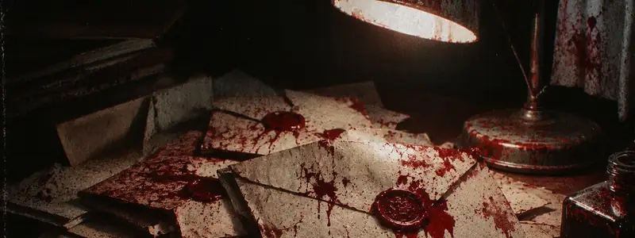

ПодборкаCollection · 呪
Проклятые вещиCursed objects
Кассета, кукла, маска, книга. Вещи, которые не стоило брать в руки.A tape, a doll, a mask, a book. Things that should never have been picked up.

21 фильмовfilms
- Eyes Without a Face (1960)Georges Franju · 5 / 5 · Eyes Without a Face (1960), dir. Georges Franju. A surgeon, a daughter in a white mask and the cold poetry of a face transplant.Хирург, дочь в белой маске и холодная поэзия пересадки лица.
- Halloween (1978)John Carpenter · 5 / 5 · Halloween (1978), dir. John Carpenter. A mask, breathing and a synthesizer theme: the slasher from which the whole genre grew.Маска, дыхание и синтезаторная тема: слэшер, из которого вырос весь жанр.
- Black Sunday (1960)Mario Bava · 4.5 / 5 · Black Sunday (1960), dir. Mario Bava. A witch in a spiked mask, black-and-white gothic and the birth of Italian horror.Ведьма в шипастой маске, чёрно-белая готика и рождение итальянского ужаса.
- Onibaba (1964)Kaneto Shindo · 4.5 / 5 · Onibaba (1964), dir. Kaneto Shindo. Two women kill samurai in the reeds, and a mask one day grows to the face.Две женщины убивают самураев в камышовых зарослях, и маска однажды прирастает к лицу.
- An American Werewolf in London (1981)John Landis · 4.5 / 5 · An American Werewolf in London (1981), dir. John Landis. Two American backpackers on the Yorkshire moors, and one of them goes home with a curse.Двое американских туристов на йоркширских болотах, и один из них возвращается домой с проклятием.
- Ju-On: The Grudge (2002)Takashi Shimizu · 4.5 / 5 · Ju-On: The Grudge (2002), dir. Takashi Shimizu. A house where a woman died, and a curse that claims everyone who steps inside.Дом, где умерла женщина, и проклятие, которое достаётся каждому, кто туда входит.
- Noroi: The Curse (2005)Koji Shiraishi · 4.5 / 5 · Noroi: The Curse (2005), dir. Koji Shiraishi. A mockumentary about a journalist investigating strange sounds and missing people.Псевдодокументальный фильм о журналисте, который изучает странные звуки и пропавших людей.
- It Follows (2014)David Robert Mitchell · 4.5 / 5 · It Follows (2014), dir. David Robert Mitchell. A curse that is passed on and never runs, it simply walks toward you.Проклятие, которое передаётся и никогда не бежит, а просто идёт к вам.
- The Curse of Frankenstein (1957)Terence Fisher · 4 / 5 · From a prison cell, Baron Frankenstein recalls how he built a body and destroyed the people who helped him.Барон Франкенштейн из тюремной камеры вспоминает, как собрал тело и погубил людей, которые ему помогали.
- Night of the Demon (1957)Jacques Tourneur · 4 / 5 · An American psychologist tries to explain away a curse while a scrap of paper keeps turning up in his path.Американский психолог пытается разоблачить проклятие, а на его пути всё время появляется клочок бумаги.
- The Masque of the Red Death (1964)Roger Corman · 4 / 5 · A prince shelters his guests in a castle and treats a spreading plague as an opportunity to stage his own spectacle.Князь укрывает гостей в замке и превращает эпидемию в повод для собственного спектакля.
- Drag Me to Hell (2009)Sam Raimi · 4 / 5 · Drag Me to Hell (2009), dir. Sam Raimi. A loan officer refuses an old woman, and she puts a curse on her.Кредитный менеджер отказывает старухе, и та накладывает проклятие.
- Tumbbad (2018)Rahi Anil Barve · 4 / 5 · Tumbbad (2018), dir. Rahi Anil Barve. Greed leads a man to a cursed goddess who must not be touched.Жадность ведёт человека к проклятой богине, которую нельзя трогать.
- Impetigore (2019)Joko Anwar · 4 / 5 · A tollbooth worker tries to claim a family house in a village that has been waiting for her return.Работница платного шоссе пытается получить семейный дом в деревне, где давно ждут её возвращения.
- Incantation (2022)Kevin Ko · 4 / 5 · Incantation (2022), dir. Kevin Ko. A mother tries to protect her daughter from a curse connected to a forbidden ritual and a family secret.Мать пытается защитить дочь от проклятия, связанного с запретным ритуалом и семейной тайной.
- Halloween III: Season of the Witch (1982)Tommy Lee Wallace · 3.5 / 5 · Halloween III: Season of the Witch (1982), dir. Tommy Lee Wallace. A mask factory and a TV jingle that drives children mad.Фабрика масок и рекламный ролик, от которого дети сходят с ума.
- Child's Play (1988)Tom Holland · 3.5 / 5 · Child's Play (1988), dir. Tom Holland. A killer's soul enters a Good Guy doll.Душа маньяка вселяется в куклу Добрый парень.
- One Missed Call (2003)Takashi Miike · 3.5 / 5 · One Missed Call (2003), dir. Takashi Miike. A phone message from the future turns an ordinary ringtone into a countdown to death.Телефонное сообщение из будущего превращает обычный звонок в обратный отсчёт до смерти.
- Sadako vs. Kayako (2016)Koji Shiraishi · 3.5 / 5 · Sadako vs. Kayako (2016), dir. Koji Shiraishi. The tape and the cursed house collide, and two girls try to pit the two ghosts against each other.Кассета и проклятый дом сталкиваются, и две девушки пытаются стравить двух призраков.
- Carved: The Slit-Mouthed Woman (2007)Koji Shiraishi · 3 / 5 · Carved: The Slit-Mouthed Woman (2007), dir. Koji Shiraishi. An urban legend of a masked woman asks children: "Am I pretty?"Городская легенда о женщине в маске спрашивает детей: «Я красивая?»
- Annabelle (2014)John R. Leonetti · 3 / 5 · Annabelle (2014), dir. John R. Leonetti. A young couple receives an old doll, and strange things begin to happen in the house.Молодая пара получает старую куклу, и после этого в доме начинаются странности.